Books
This is NOT a list of every book I've read, but all the ones I own :)
I'm not always big on rating books so I've made 3 stickers that will pop-up for some of them :
Most of my books don't fit in any of these categories so they won't have a sticker. It could mean I liked it, I didn't, it was meh or anything else.
You may notice as you browse my collection that some books have a French or German title/cover. I try to show here the exact editions that I own which means that I have read those specific books in French/German. Since my website is in English, the rest of their summaries will be written in English. EXCEPT if the book doesn't have an English translation.
Within the sections, there is no specific order to the books.
You can click on each cover to have more info.
If the images don't load, please refresh the page
Favs |
||||
Fav author : Katherine ArdenI've been struggling with finding books that I actually love and want to finish for a couple of years now. But every single book I read by Katherine Arden takes me to a whole new world. 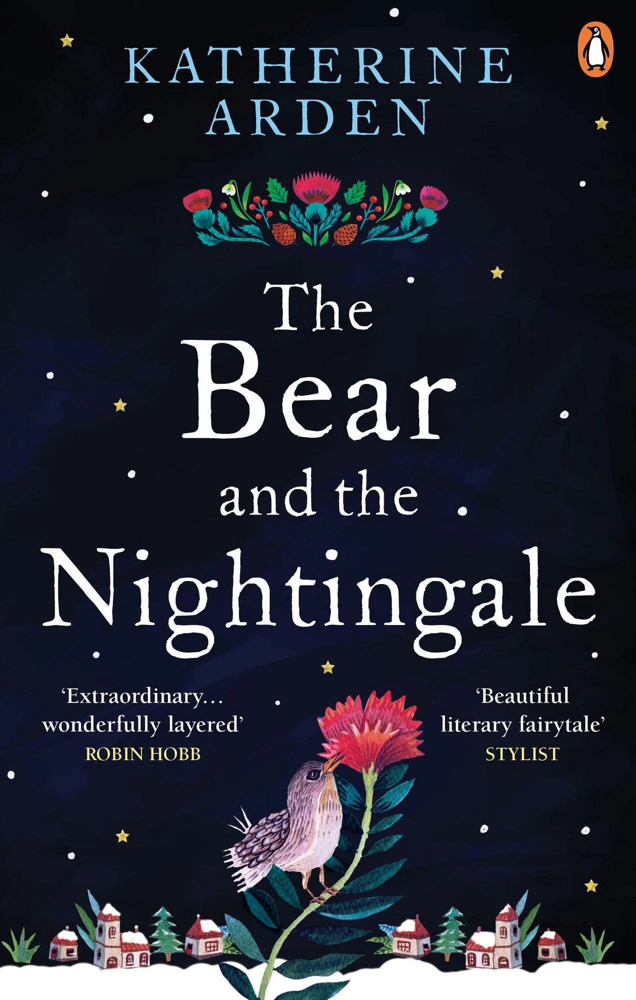 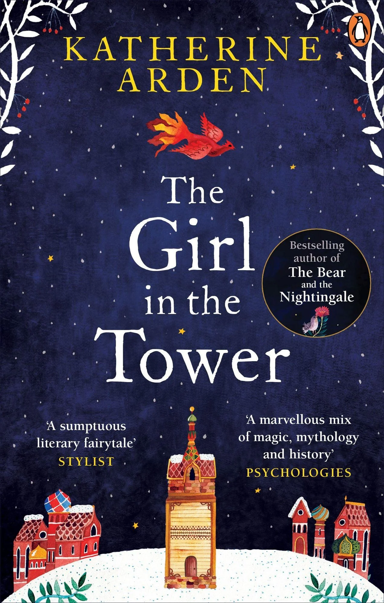 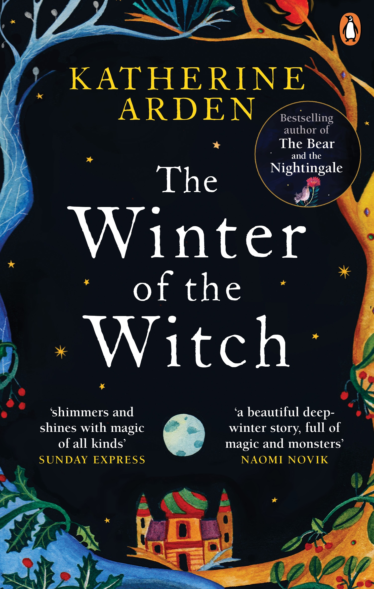 "The Warm Hands of Ghosts" is a little different from her other books. It's a lot more psychological and there is a little less magical elements. But her writing is just as wonderful !
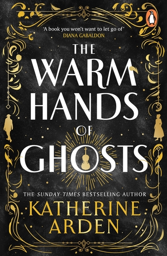 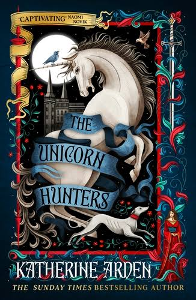 Fav book series : "The Bone Season" by Samantha ShannonI discovered Samantha Shannon at a local festival where she had a panel. I had somehow never heard of her before ! I found her so cool, I was curious to see her writing. So I picked up the first book of the series (also called "The Bone Season") after the panel. I was lucky enough to get it signed too !
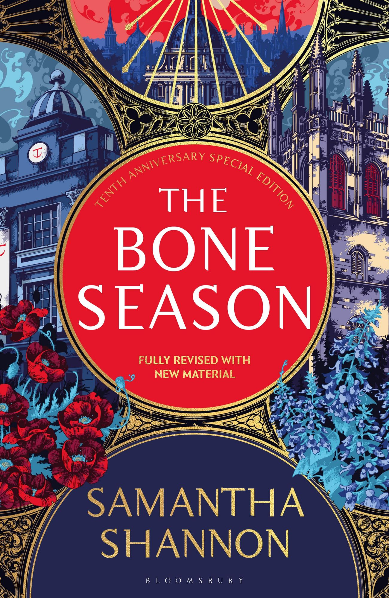 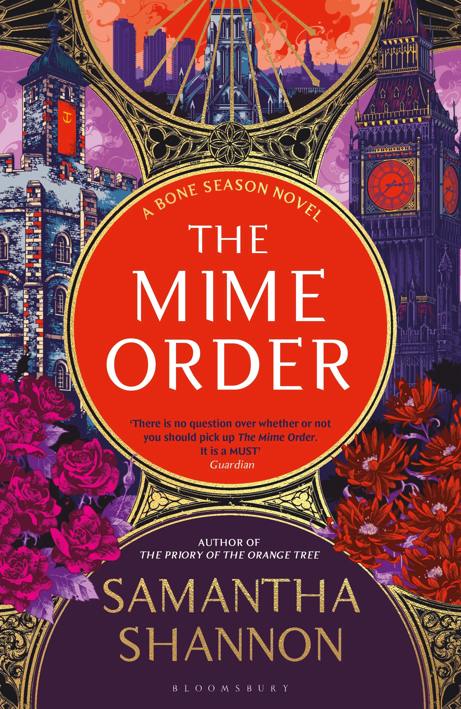 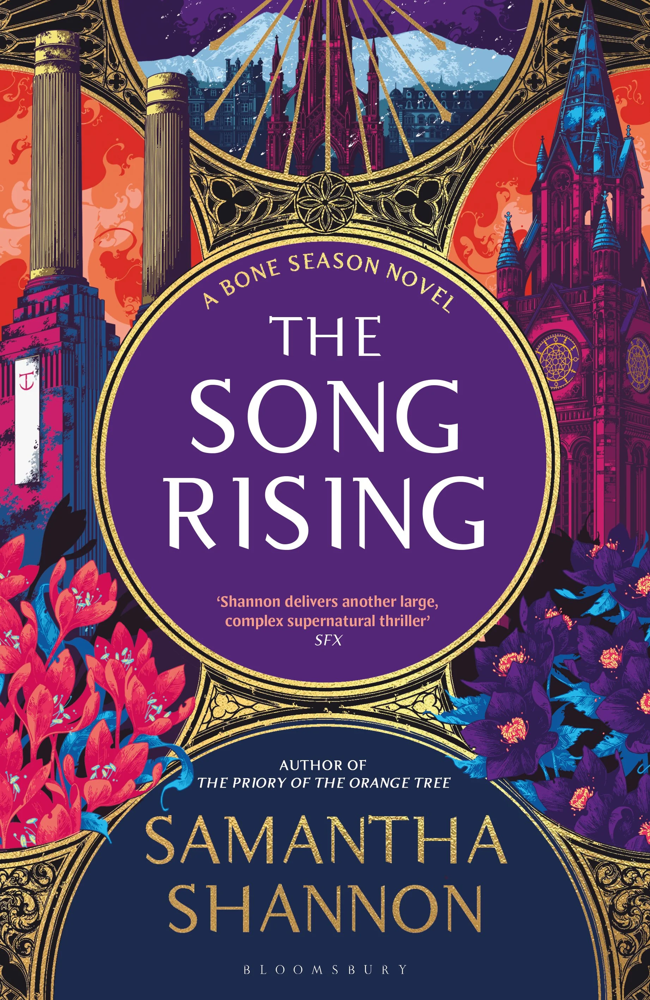 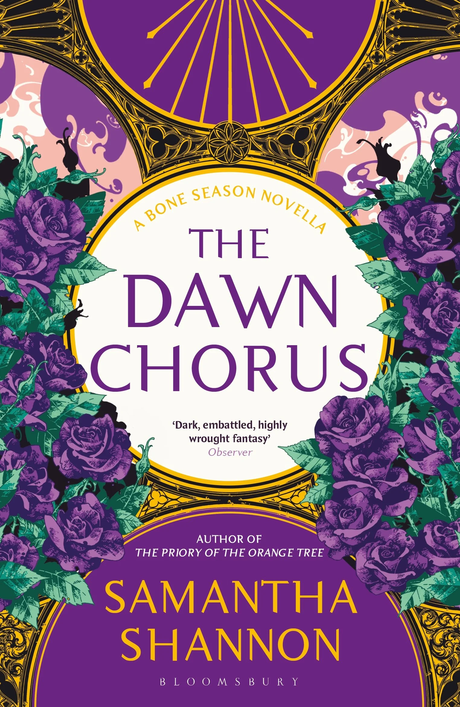 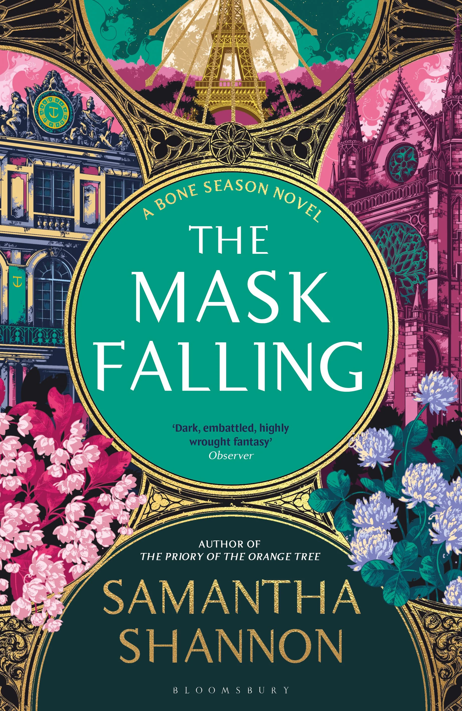 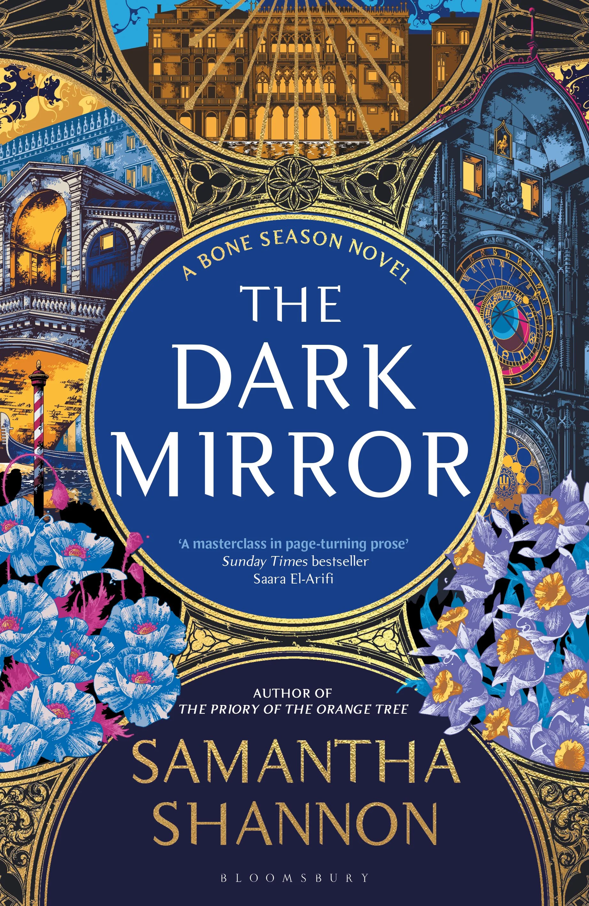 |
||||
Fantasy |
||||
|
My favourite genre ! There's also some historical fantasy here and there :) Katherine Arden
Published : January 2017 Book 1 of the Winternight TrilogyWinter lasts most of the year at the edge of the Russian wilderness, and in the long nights, Vasilisa and her siblings love to gather by the fire to listen to their nurse’s fairy tales. Above all, Vasya loves the story of Frost, the blue-eyed winter demon. Wise Russians fear him, for he claims unwary souls, and they honor the spirits that protect their homes from evil. NotesKatherine Arden
Published : December 2017 Book 2 of the Winternight TrilogyVasilisa has grown up at the edge of a Russian wilderness, where snowdrifts reach the eaves of her family’s wooden house and there is truth in the fairy tales told around the fire. Vasilisa’s gift for seeing what others do not won her the attention of Morozko—Frost, the winter demon from the stories—and together they saved her people from destruction. But Frost’s aid comes at a cost, and her people have condemned her as a witch. NotesKatherine Arden
Published : January 2019 Book 3 of the Winternight TrilogyNow Moscow has been struck by disaster. Its people are searching for answers—and for someone to blame. Vasya finds herself alone, beset on all sides. The Grand Prince is in a rage, choosing allies that will lead him on a path to war and ruin. A wicked demon returns, stronger than ever and determined to spread chaos. Caught at the center of the conflict is Vasya, who finds the fate of two worlds resting on her shoulders. Her destiny uncertain, Vasya will uncover surprising truths about herself and her history as she desperately tries to save Russia, Morozko, and the magical world she treasures. But she may not be able to save them all. NotesSamantha Shannon
Published : August 2013 Book 1 of The Bone SeasonThe year is 2059. For two centuries, the Republic of Scion has led an oppressive campaign against unnaturalness in Europe. NotesSamantha Shannon
Published : January 2015 Book 2 of The Bone SeasonPaige Mahoney has escaped the clandestine prison city of Oxford. Now a fugitive in London, she nurtures a new taste for revolution. NotesSamantha Shannon
Published : March 2017 Book 3 of The Bone SeasonFollowing a fierce battle for the Rose Crown, Paige Mahoney has risen to the dangerous position of Underqueen, ruling over the clairvoyant syndicate of London. But with vengeful enemies still at large, the task of stabilizing the fractured underworld has never seemed so challenging. NotesSamantha Shannon
Published : July 2020 Novella 3.5 of The Bone SeasonPaige Mahoney and Arcturus Mesarthim have arrived in the Scion Citadel of Paris. Exhausted by her efforts against Scion, Paige has no choice but to remain in hiding, away from the revolution she started, so she can heal and come to terms with her mental and physical scars. NotesSamantha Shannon
Published : January 2021 Book 4 of The Bone SeasonPaige Mahoney has eluded death again. Snatched from the jaws of captivity and sent to a safe house in the Scion Citadel of Paris, she finds herself caught between factions that seek Scion's downfall and those who would kill to protect the puppet empire. NotesSamantha Shannon
Published : February 2025 Book 5 of The Bone SeasonPaige Mahoney is outside the Republic of Scion for the first time in more than a decade – but she has no idea how she got to the free world. Half a year has been wiped from her memory. Notes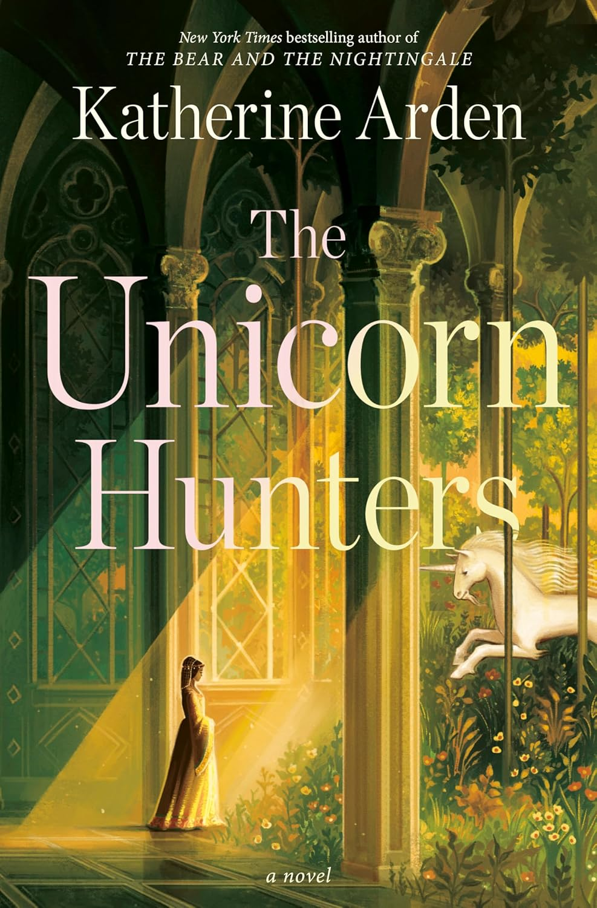 Katherine Arden
Published : June 2026 Yes, I have multiple copies of this bookAnne of Brittany was a child when France invaded and drove her royal father to his death. Now she is a young woman, sovereign duchess of an occupied realm, and France means to crown their conquest by marrying her to their king. Such an alliance would put her title, her lands, and her body forever in the hands of her enemies. NotesFrom the Goldsboro Books Fellowship subscription. Katherine Arden
Published : February 2024 January 1918. Laura Iven was a revered field nurse until she was wounded and discharged from the medical corps, leaving behind a brother still fighting in Flanders. Now home in Halifax, Canada, she receives word of Freddie’s death in combat, along with his personal effects—but something doesn’t make sense. Determined to uncover the truth, Laura returns to Belgium as a volunteer at a private hospital. Soon after arriving, she hears whispers about haunted trenches, and a strange hotelier whose wine gives soldiers the gift of oblivion. Could Freddie have escaped the battlefield, only to fall prey to something—or someone—else? Notes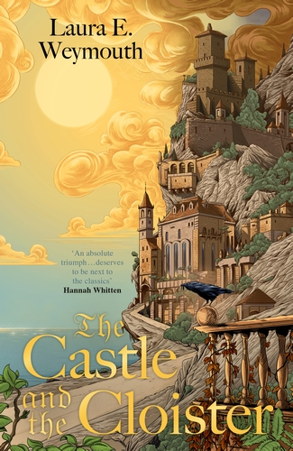 Laura E. Weymouth
Published : August 2026 Book 1 of the Daughters of Light DuologyTwo hundred years ago, the warmongering Inver clan conquered the nation of Honoria, suppressing its pacifist goddesses, and ushering in an era of blood and battles. Now, after a brief but fraught peace, a king’s whims threaten to reignite the engines of war. NotesFrom the Goldsboro Books Fellowship subscription. 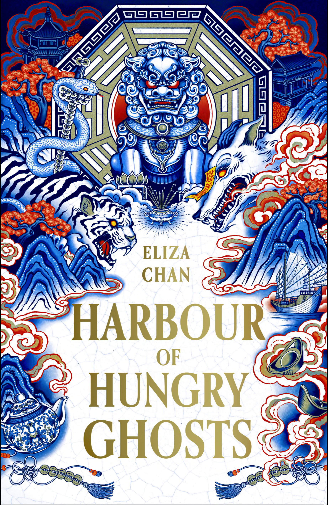 Eliza Chan
Published : July 2026 Book 1 of the Chronicles of the Yiugwai HuntersThe Au family serve the people of Hong Kong: blessing shrines, honouring the dead and dealing with dangerous monster incursions. The expectations on eldest daughter Kiamling are high, which is not something her strict grandmother will let her forget. NotesFrom the Goldsboro Books Fellowship subscription. 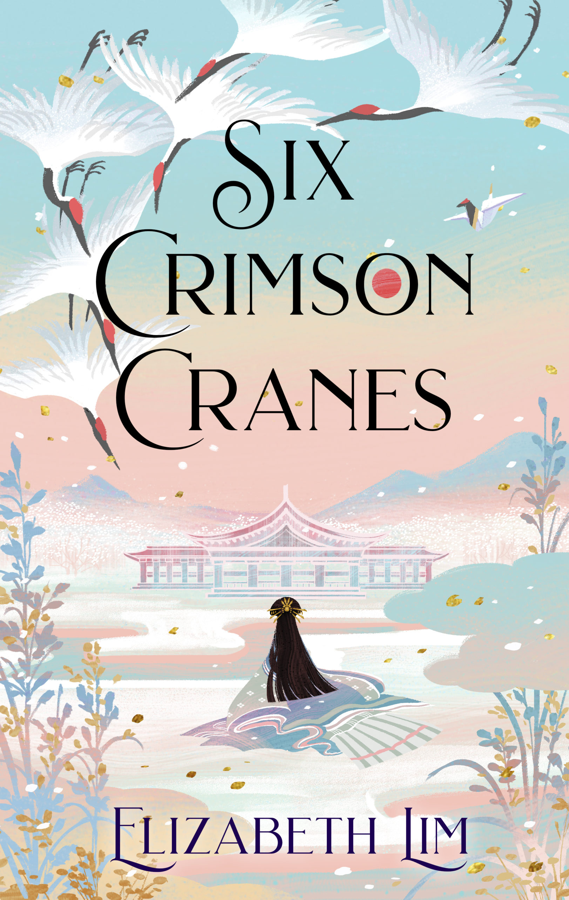 Elizabeth Lim
Published : July 2021 Book 1 of the Six Crimson Cranes seriesShiori’anma, the only princess of Kiata, has a secret. Forbidden magic runs through her veins. Normally she conceals it well, but on the morning of her betrothal ceremony, Shiori loses control. At first, her mistake seems like a stroke of luck, forestalling the wedding she never wanted, but it also catches the attention of Raikama, her stepmother. Notes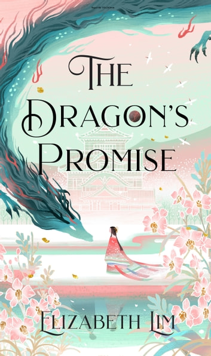 Elizabeth Lim
Published : August 2022 Book 2 of the Six Crimson Cranes seriesPrincess Shiori made a deathbed promise to return the dragon's pearl to its rightful owner, but keeping that promise is more dangerous than she ever imagined. Notes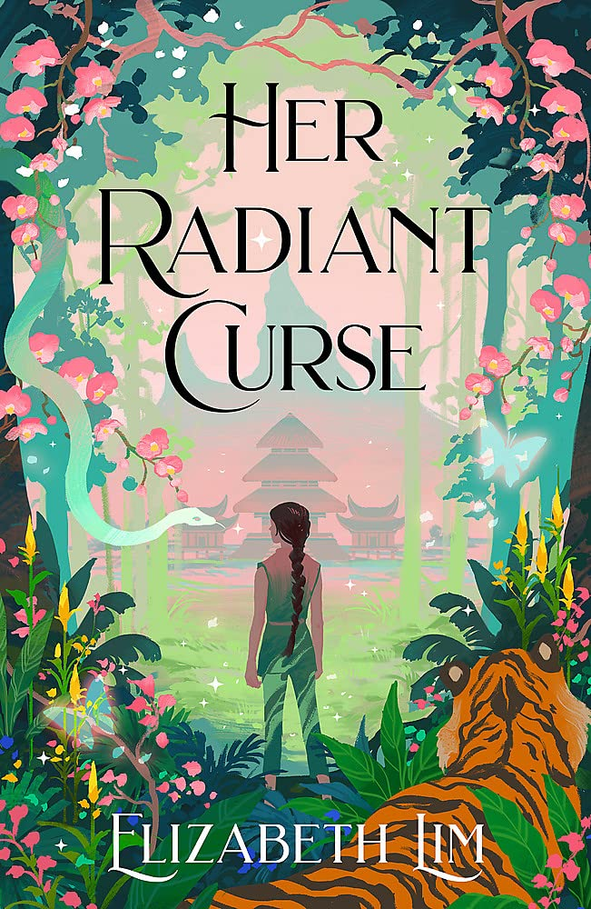 Elizabeth Lim
Published : August 2023 Book 0 (prequel) of the Six Crimson Cranes seriesChanni was not born a monster. But when her own father offers her in sacrifice to the Demon Witch, she is forever changed. Cursed with a serpent’s face, Channi is the exact opposite of her beautiful sister, Vanna—the only person in the village who looks at Channi and doesn’t see a monster. The only person she loves and trusts. Notes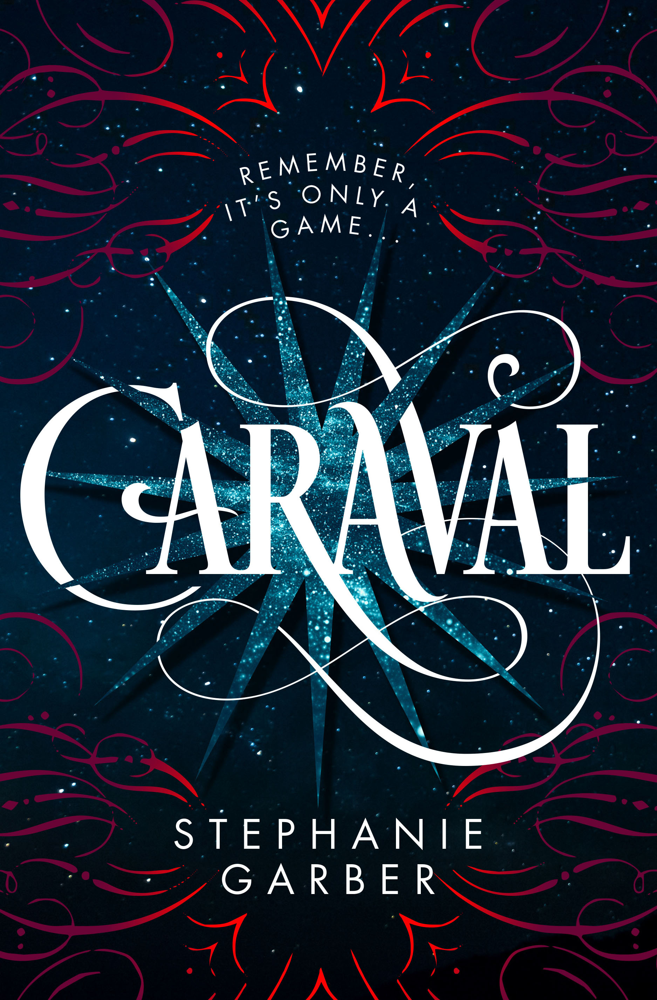 Stephanie Garber
Published : September 2016 Book 1 of the Caraval seriesScarlett has never left the tiny island where she and her beloved sister, Tella, live with their powerful and cruel father. Now Scarlett’s father has arranged a marriage for her, and Scarlett thinks her dreams of seeing Caraval, the far-away, once-a-year performance where the audience participates in the show, are over. Notes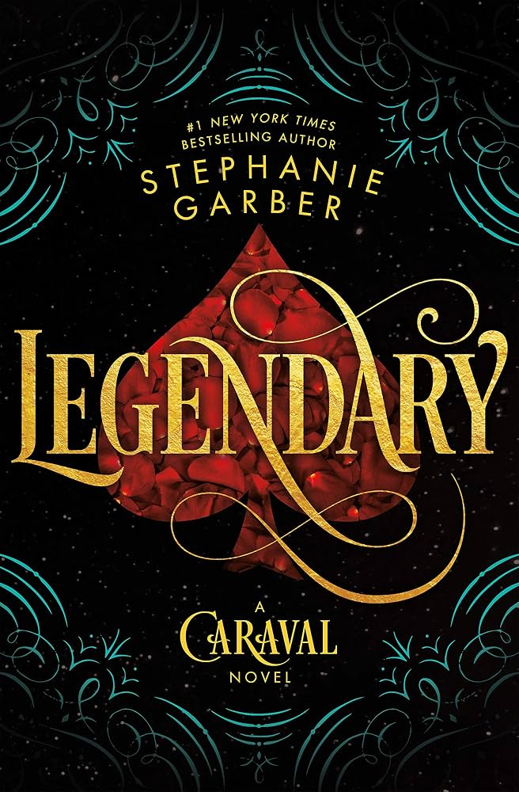 Stephanie Garber
Published : May 2018 Book 2 of the Caraval seriesDonatella and Scarlett Dragna escaped their cruel father and made it out of Caraval alive, but the games aren’t over yet. What Scarlett doesn’t know is that, in order to gain their freedom, Tella made a deal with a mysterious stranger and now it’s time to pay. Notes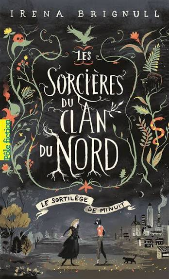 Irena Brignull
Published : June 2016 Book 1 of the Hawkweed Prophecy seriesPoppy Hooper and Ember Hawkweed couldn't lead more different lives. Poppy is a troubled teen: moving from school to school, causing chaos wherever she goes, never making friends or lasting connections. Ember is a young witch, struggling to find a place within her coven and prove her worth. Both are outsiders: feeling like they don't belong and seeking escape. Notes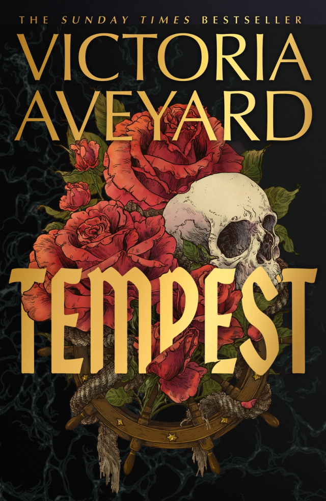 Victoria Aveyard
Published : September 2026 Book 1 of The Lyrian Sea seriesCat Rose knows what it is to live in two worlds, in two times. Before—as Lady Catrine Rose of the Meridian Empire, chained to a loathsome lord with a dwindling fortune. And after—as the Widow Rose, queen of a pirate tavern in the Lyrian Sea, determined to be the master of her own fate. NotesFrom the Goldsboro Books Fellowship subscription. 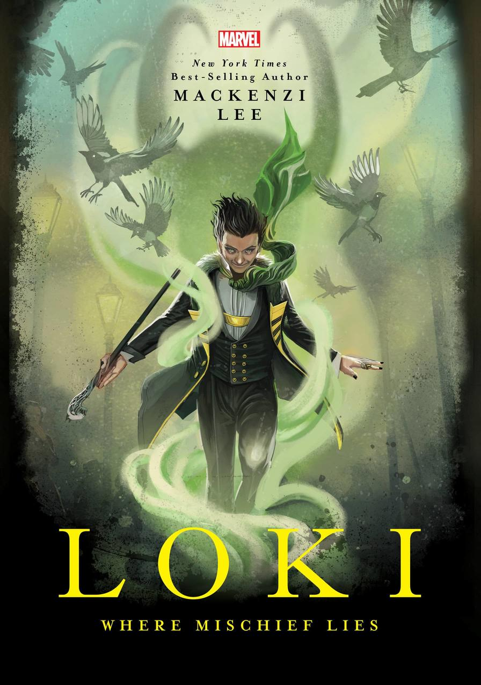 Mackenzi Lee
Published : September 2019 Before the days of going toe-to-toe with the Avengers, a younger Loki is desperate to prove himself heroic and capable, while it seems everyone around him suspects him of inevitable villainy and depravity... except for Amora. Asgard's resident sorceress-in-training feels like a kindred spirit-someone who values magic and knowledge, who might even see the best in him. Notes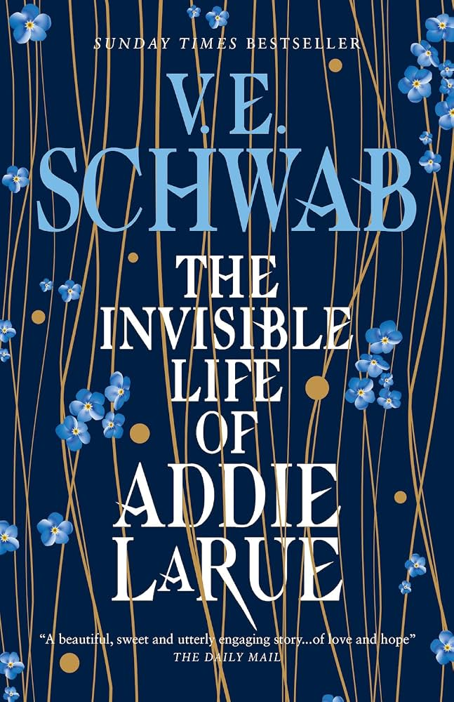 V.E. Schwab
Published : October 2020 France, 1714: In a moment of desperation, a young woman makes a Faustian bargain to live forever—and is cursed to be forgotten by everyone she meets. Thus begins the extraordinary life of Addie LaRue, and a dazzling adventure that will play out across centuries and continents, across history and art, as a young woman learns how far she will go to leave her mark on the world. But everything changes when, after nearly 300 years, Addie stumbles across a young man in a hidden bookstore and he remembers her name. Notes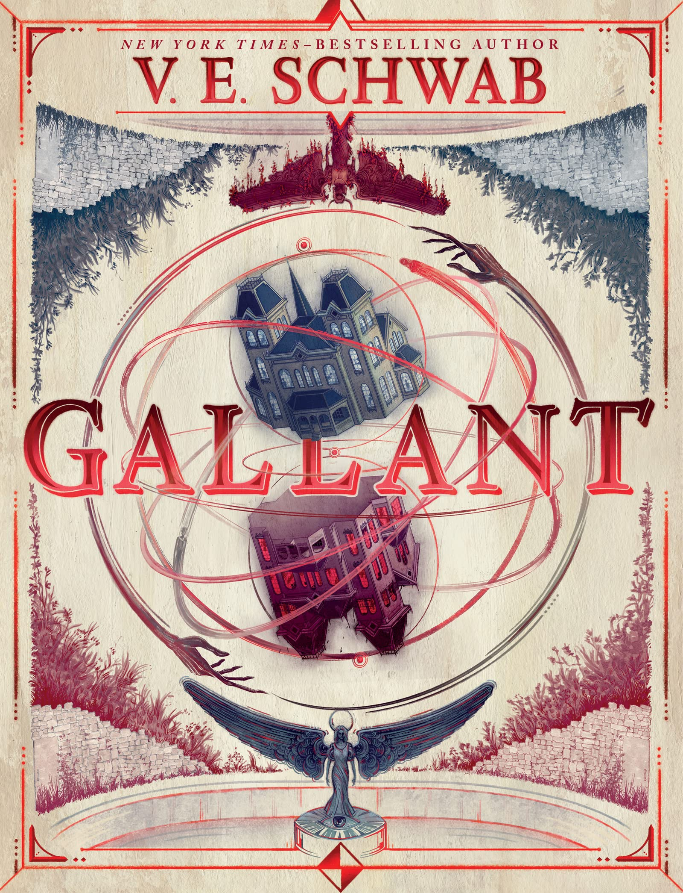 V.E. Schwab
Published : March 2022 Olivia Prior has grown up in Merilance School for girls, and all she has of her past is her mother’s journal—which seems to unravel into madness. Then, a letter invites Olivia to come home—to Gallant. Yet when Olivia arrives, no one is expecting her. But Olivia is not about to leave the first place that feels like home, it doesn’t matter if her cousin Matthew is hostile or if she sees half-formed ghouls haunting the hallways. NotesTahereh Mafi
Published : August 2016 Book 1 of FurthermoreThere are only three things that matter to twelve-year-old Alice Alexis Queensmeadow: Mother, who wouldn’t miss her; magic and color, which seem to elude her; and Father, who always loved her. The day Father disappears from Ferenwood he takes nothing but a ruler with him. But it’s been almost three years since then, and Alice is determined to find him. She loves her father even more than she loves adventure, and she’s about to embark on one to find the other. Notes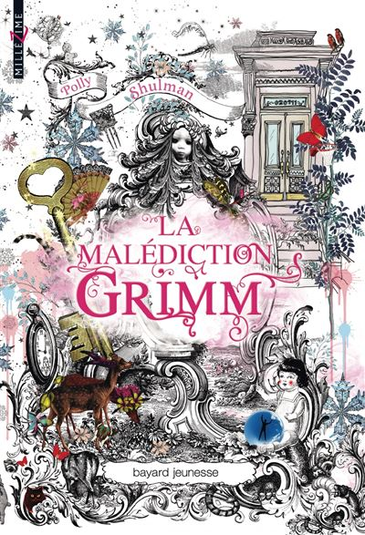 Polly Shulman
Published : July 2010 Book 1 of The Grimm Legacy seriesElizabeth has a new job at an unusual library - a lending library of objects, not books. In a secret room in the basement lies the Grimm Collection. That's where the librarians lock away powerful items straight out of the Brothers Grimm fairy tales; seven-league boots, a table that produces a feast at the blink of an eye, Snow White's stepmother's sinister mirror that talks in riddles. Notes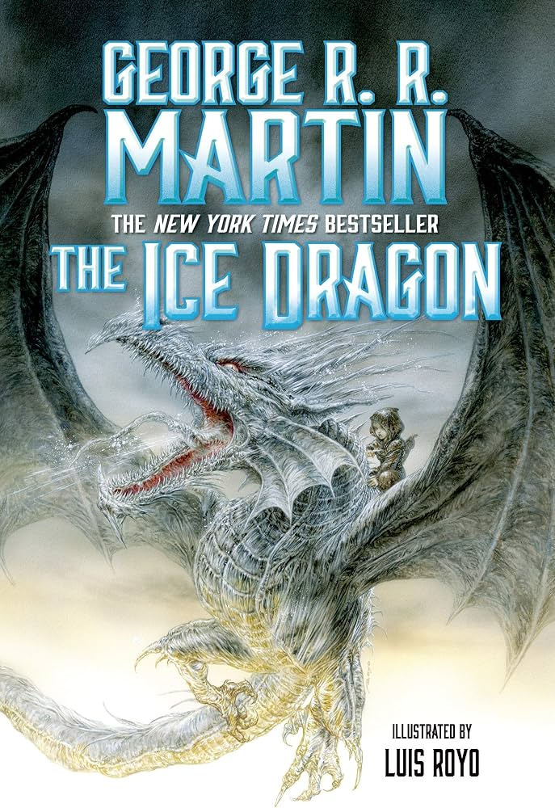 George R.R. Martin
Published : January 1980 The ice dragon was a creature of legend and fear, for no man had ever tamed one. When it flew overhead, it left in its wake desolate cold and frozen land. But Adara was not afraid. For Adara was a winter child, born during the worst freeze that anyone, even the Old Ones, could remember. Notes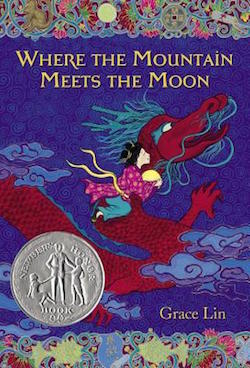 Grace Lin
Published : June 2009 In the valley of Fruitless Mountain, a young girl named Minli spends her days working hard in the fields and her nights listening to her father spin fantastic tales about the Jade Dragon and the Old Man of the Moon. Minli's mother, tired of their poor life, chides him for filling her head with nonsense. But Minli believes these enchanting stories and embarks on an extraordinary journey to find the Old Man of the Moon and ask him how her family can change their fortune. She encounters an assorted cast of characters and magical creatures along the way, including a dragon who accompanies her on her quest. Notes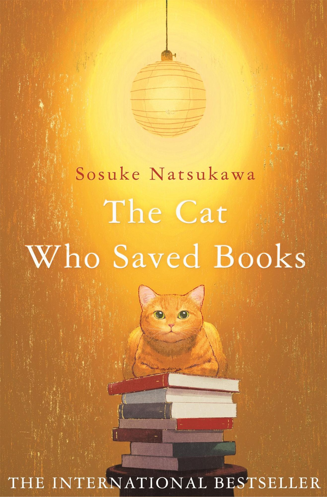 Sōsuke Natsukawa
Published : February 2017 Book 1 of The Cat Who... seriesNatsuki Books was a tiny second-hand bookshop on the edge of town. Inside, towering shelves reached the ceiling, every one crammed full of wonderful books. Rintaro Natsuki loved this space that his grandfather had created. He spent many happy hours there, reading whatever he liked. It was the perfect refuge for a boy who tended to be something of a recluse. Notes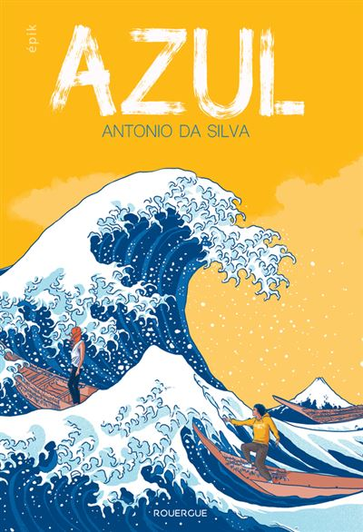 Antonio da Silva
Published : September 2021 Entrer dans un tableau ? NotesAlexandra Bracken
Published : December 2012 Book 1 of The Darkest Minds seriesWhen Ruby woke up on her tenth birthday, something about her had changed. Something alarming enough to make her parents lock her in the garage and call the police. Something that gets her sent to Thurmond, a brutal government “rehabilitation camp.” She might have survived the mysterious disease that’s killed most of America’s children, but she and the others have emerged with something far worse: frightening abilities they cannot control. NotesStarted reading after seeing the movie. Alexandra Bracken
Published : October 2013 Book 2 of The Darkest Minds seriesRuby never asked for the abilities that almost cost her her life. Now she must call upon them on a daily basis, leading dangerous missions to bring down a corrupt government and breaking into the minds of her enemies. Other kids in the Children’s League call Ruby “Leader”, but she knows what she really is: a monster. NotesAlexandra Bracken
Published : October 2014 Book 3 of The Darkest Minds seriesRuby can't look back. Fractured by an unbearable loss, she and the kids who survived the government's attack on Los Angeles travel north to regroup. With them is a prisoner: Clancy Gray, son of the president, and one of the few people Ruby has encountered with abilities like hers. Only Ruby has any power over him, and just one slip could lead to Clancy wreaking havoc on their minds. Notes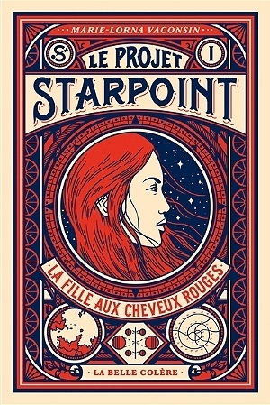 Marie-Lorna Vaconsin
Published : March 2017 Book 1 of Le Projet Starpoint seriesPythagore Luchon, 15 ans, entre en seconde. Il se réjouit à l'idée de retrouver sa meilleure amie Louise, mais cette dernière l'ignore, lui préférant la compagnie de Foresta Erivan. Au contact de ce dernier, elle s'isole et commence à s'absenter du lycée. Une nuit, Foresta vient annoncer la disparition de Louise à Pythagore : pour la retrouver, ils doivent passer par l'angle mort des miroirs. Notes
Bel Banta
Published : September 2026 In Alvion, magicians have always ruled beside kings. Blessed at birth by one of the seven planets, their abilities are miraculous and extremely rare. Magicians born under Jupiter influence luck. Saturnborn can speak to the dead. Venusborn read the desires of the living. NotesFrom the Goldsboro Books Fellowship subscription. 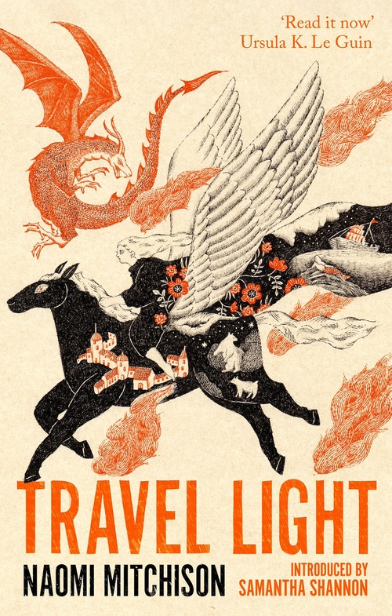 Naomi Mitchison
Published : January 1952 Halla is the daughter of a king, cast out as a baby into a world of danger and enchantment. She is raised by bears, lives amongst dragons, converses with Valkyries and avoids warmongering heroes. But times are changing, and an encounter with the Wanderer, Odin All-Father, finds her at a crossroads. Cutting a fold from his night-blue cloak and laying it over her shoulders, the Wanderer sends her on a journey into the unknown. With only her bear-like kindness, her dragonish wisdom and her own fierce spirit to guide her, Halla must forge her own path... Notes |
||||
Classics |
||||
|
This section includes books I've read for fun but most of them were read/studied for class in high school. 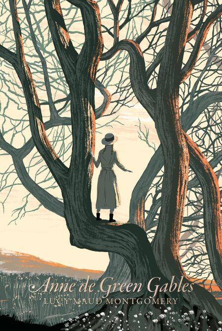 L.M. Montgomery
Published : January 1908 Book 1 of the Anne of Green Gables seriesAnne Shirley, an eleven-year-old orphan, has arrived in this verdant corner of Prince Edward Island only to discover that the Cuthberts—elderly Matthew and his stern sister, Marilla—want to adopt a boy, not a feisty redheaded girl. But before they can send her back, Anne—who simply must have more scope for her imagination and a real home—wins them over completely. Notes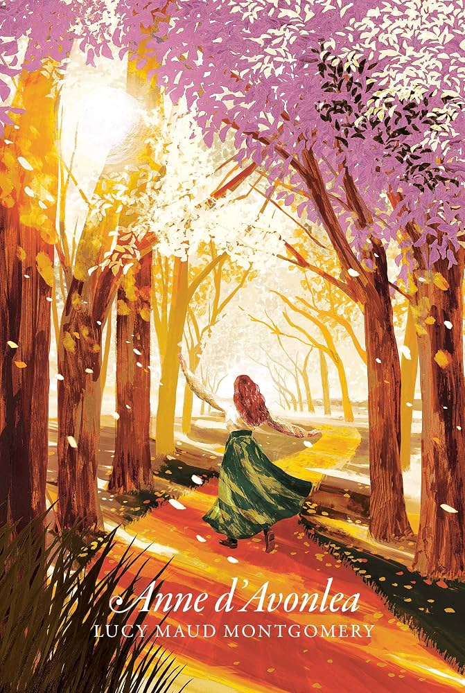 L.M. Montgomery
Published : January 1909 Book 2 of the Anne of Green Gables seriesWhen twelve-year-old Anne Shirley came to Avonlea, she quickly won everyone’s heart. Now, she’s five years older, almost a woman, and about to embark on a new adventure: becoming the teacher in her old Avonlea school. It’s an exciting year as Anne struggles to win over all her students, welcomes two new members to her family, and feels the first stirrings of love. Notes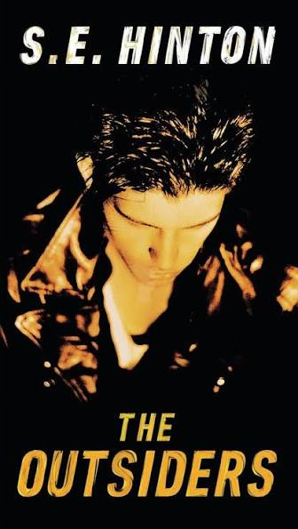 S.E. Hinton
Published : April 1967 Yes, I have multiple copies of this bookNo one ever said life was easy. But Ponyboy is pretty sure that he's got things figured out. He knows that he can count on his brothers, Darry and Sodapop. And he knows that he can count on his friends - true friends who would do anything for him, like Johnny and Two-Bit. And when it comes to the beating up on "greasers" like him and his friends - he knows that he can count on them for trouble. But one night someone takes things too far, and Ponyboy's world is turned upside down... NotesLike most, I read The Outsiders in high school and fell in love with it. I had an English oral exam on it and I think it's the only time I had so much fun during an exam haha ! 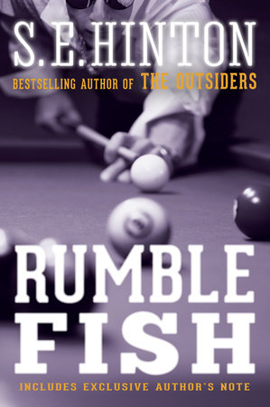 S.E. Hinton
Published : September 1975 Rusty-James is the toughest guy in the group of high-school kids who hang out and shoot pool down at Benny's, and he enjoys keeping up his reputation. What he wants most of all is to be just like his older brother, the Motorcycle Boy. He wants to stay calm and laughing when things get dangerous, to be the toughest street fighter and the most respected guy on their side of the river. Rusty-James isn't book-smart, and he knows it. He relies on his fists instead of his brains. Until now he's gotten along all right, because whenever he gets into trouble, the Motorcycle Boy bails him out. But Rusty-James' drive to be like his brother eats away at his world--until it all comes apart in an explosive chain of events. And this time the Motorcycle Boy isn't around to pick up the pieces. Notes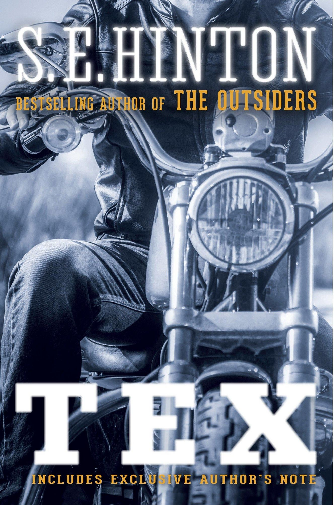 S.E. Hinton
Published : August 1979 Easygoing and reckless Tex likes everyone and everything, especially his horse, Negrito, and Johnny Collins's blue-eyed sister, Jamie. Life with his older brother, Mason, would be just about perfect if only Mace would stop complaining about Pop, who hasn't been home in five months. While Mason worries about paying the bills and getting a basketball scholarship--his ticket out of Oklahoma--Tex just seems to attract trouble. Can he find a way to keep things together when everything seems to be falling apart? NotesN.H. Kleinbaum
Published : January 1988 Todd Anderson and his friends at Welton Academy can hardly believe how different life is since their new English professor, the flamboyant John Keating, has challenged them to "make your lives extraordinary! " Inspired by Keating, the boys resurrect the Dead Poets Society--a secret club where, free from the constraints and expectations of school and parents, they let their passions run wild. As Keating turns the boys on to the great words of Byron, Shelley, and Keats, they discover not only the beauty of language, but the importance of making each moment count. But the Dead Poets pledges soon realize that their newfound freedom can have tragic consequences. Can the club and the individuality it inspires survive the pressure from authorities determined to destroy their dreams? NotesIt's pretty rare for a book to be based on a movie so I wanted to try it out. From what I can remember, it was pretty good. Which is why I stopped reading after Neil finished his play lol. 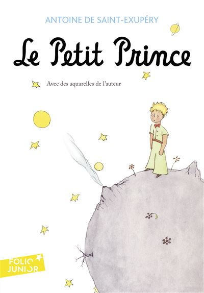 Antoine de Saint-Exupéry
Published : April 1943 A pilot forced to land in the Sahara meets a little prince. The wise and enchanting stories the prince tells of his own planet with its three volcanoes and a haughty flower are unforgettable. Notes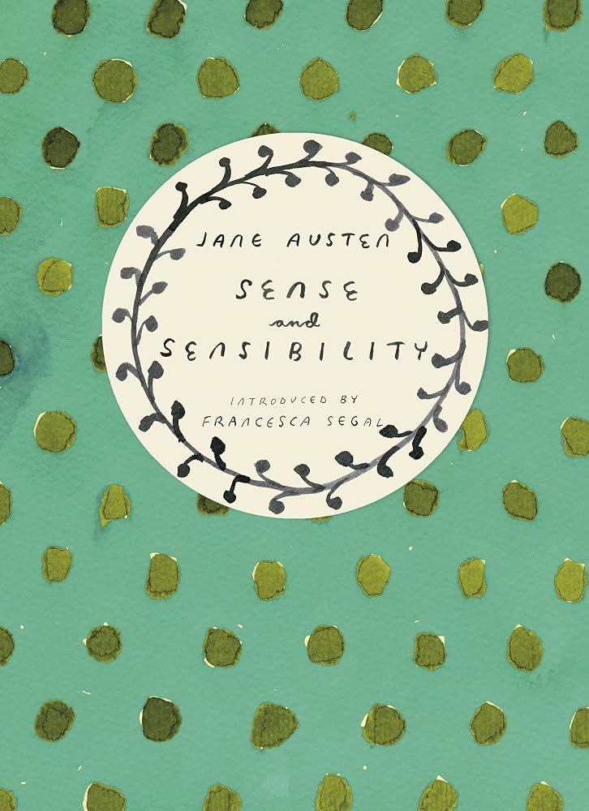 Jane Austen
Published : October 1811 Marianne Dashwood wears her heart on her sleeve, and when she falls in love with the dashing but unsuitable John Willoughby she ignores her sister Elinor's warning that her impulsive behaviour leaves her open to gossip and innuendo. Meanwhile Elinor, always sensitive to social convention, is struggling to conceal her own romantic disappointment, even from those closest to her. Through their parallel experience of love—and its threatened loss—the sisters learn that sense must mix with sensibility if they are to find personal happiness in a society where status and money govern the rules of love. Notes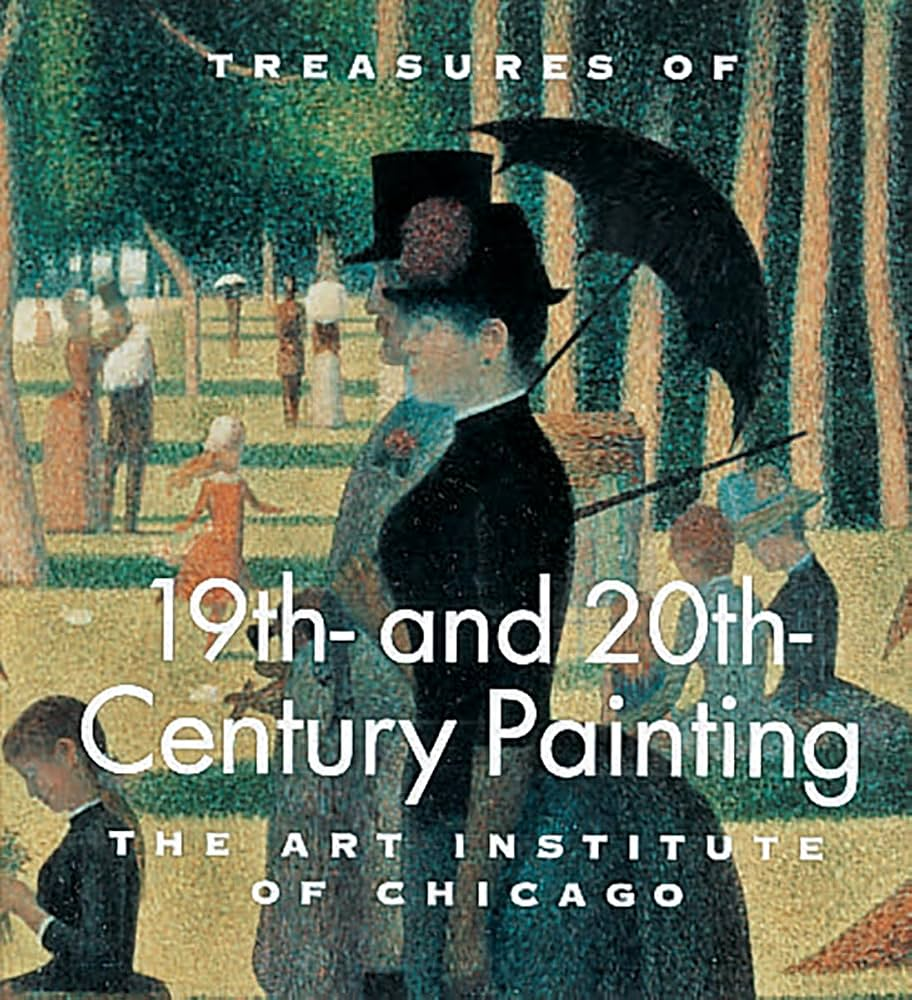 James N. Wood
Published : August 1993 The Art Institute of Chicago houses some of the most celebrated European and American paintings from the nineteenth and twentieth centuries. Included in this collection are numerous masterpieces of realism, Impressionism, Post-Impressionism, Surrealism, Cubism, Abstract Expressionism, and other aspects of modernism. Today a number of these paintings are revered as icons of modern Western culture, emblems of the inspired experimentation that has taken place on both sides of the Atlantic. NotesRoberto Carvalho de Magalhães
Published : January 2004 - Notes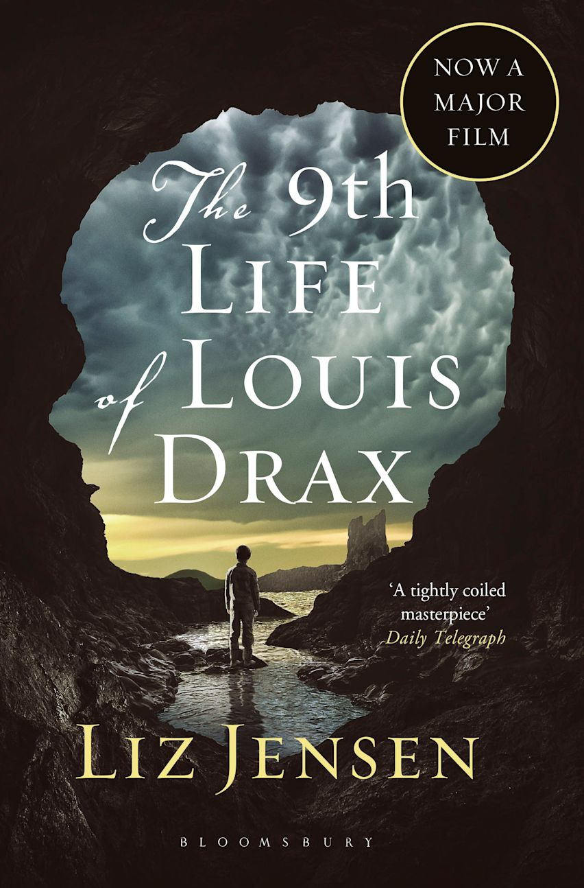 Liz Jensen
Published : January 2004 Louis Drax is a boy like no other. He is brilliant and strange, and every year something violent seems to happen to him. On his ninth birthday, Louis goes on a picnic with his parents and falls off a cliff. The details are shrouded in mystery. Louis's mother is shell-shocked; his father has vanished. And after some confusion Louis himself, miraculously alive but deep in a coma, arrives at Dr. Pascal Dannachet's celebrated coma clinic… NotesWolfgang Herrndorf
Published : January 2010 Zwei Jungs. Ein geknackter Lada. Eine Reise voller Umwege durch ein unbekanntes Deutschland. Mutter in der Entzugsklinik, Vater mit Assistentin auf Geschäftsreise: Maik Klingenberg wird die großen Ferien allein am Pool der elterlichen Villa verbringen. Doch dann kreuzt Tschick auf. Tschick, eigentlich Andrej Tschichatschow, kommt aus einem der Asi-Hochhäuser in Hellersdorf, hat es von der Förderschule irgendwie bis aufs Gymnasium geschafft und wirkt doch nicht gerade wie das Musterbeispiel der Integration. Außerdem hat er einen geklauten Wagen zur Hand. Und damit beginnt eine unvergessliche Reise ohne Karte und Kompass durch die sommerglühende deutsche Provinz. Notes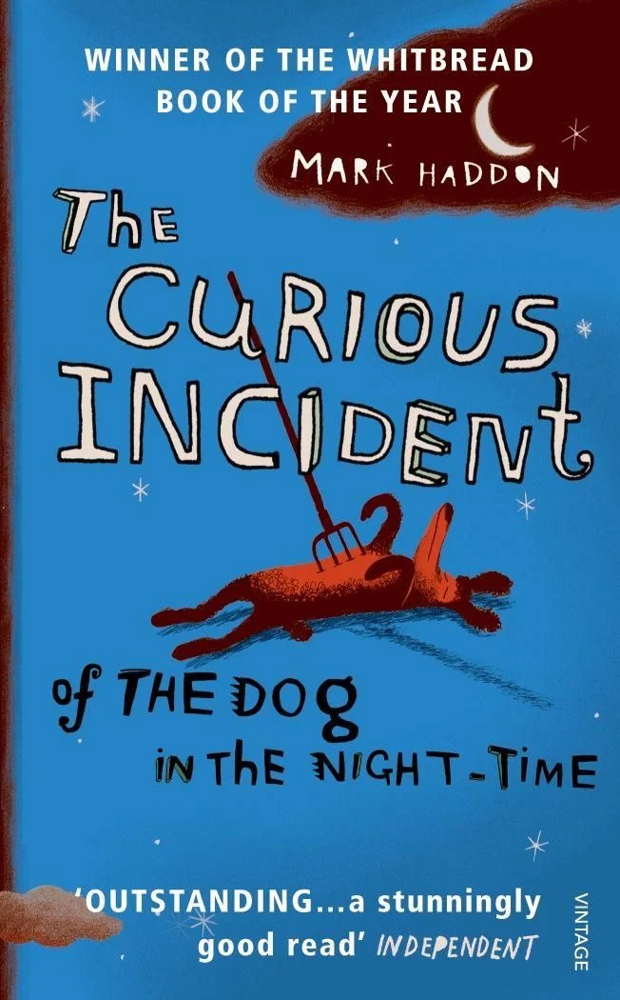 Mark Haddon
Published : July 2003 Christopher John Francis Boone knows all the countries of the world and their capitals and every prime number up to 7,057. He relates well to animals but has no understanding of human emotions. He cannot stand to be touched. And he detests the color yellow. This improbable story of Christopher’s quest to investigate the suspicious death of a neighborhood dog makes for one of the most captivating, unusual, and widely heralded novels in recent years. Notes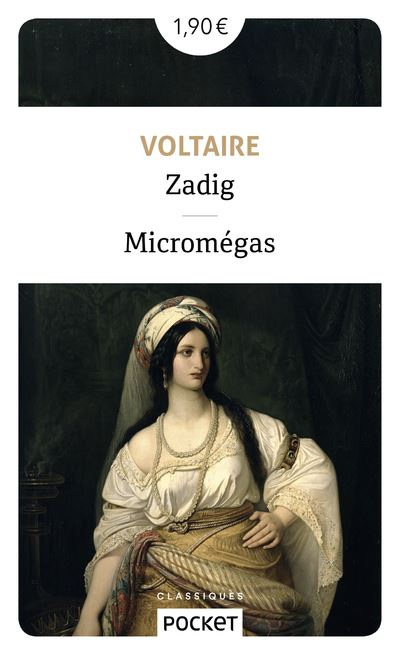 Voltaire
Published : January 1759 Il faut être très court, et un peu salé, sans quoi les ministres et madame de Pompadour, les commis et les femmes de chambre, font des papillotes du livre. Brièveté et mordant : telles sont les principales qualités de Micromégas, Zadig et Candide, les trois contes de Voltaire les plus célèbres, traversés par deux motifs : le philosophe dans le monde, le bonheur par la philosophie. Chassé de sa planète, Micromégas -un jeune géant de près de sept cents ans - entame un périple cosmique qui le mènera à ces petites mites qu'on appelle les hommes. En proie aux caprices du sort, l'Oriental Zadig fera la rencontre d'un ermite à la barbe blanche, détenteur du livre des destinées où tout est écrit. Quant à Candide, contraint de quitter le château de Thunder-ten-tronckh, il apprendra à ses dépens que tout n'est pas pour le mieux dans le meilleur des mondes... Notes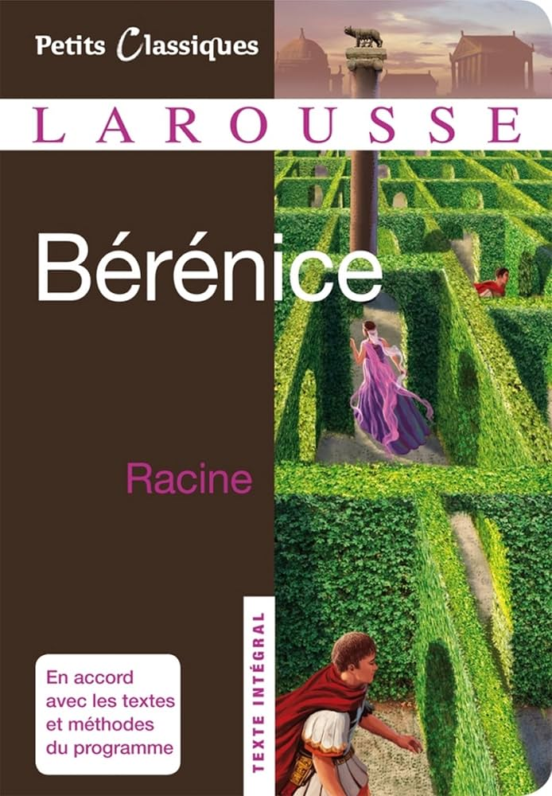 Jean Racine
Published : November 1670 Bérénice, au centre de l’œuvre de son auteur, en 1670, est une pièce singulière dans la production de Racine : c’est une tragédie où il n’y a pas de sang. Elle paraît peut-être d’autant plus douloureuse. Se séparer est pire ici que mourir. C’est le sort des trois personnages de la pièce : Bérénice, reine qui aime l’empereur Titus et qui devait l’épouser, Antiochus, qui voue un amour sans espoir à Bérénice. Il s’agit seulement de prononcer un mot, si dur, si tendre : adieu. Notes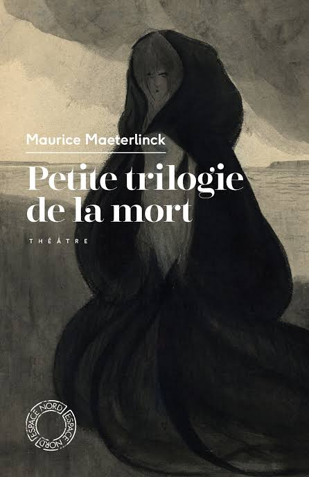 Maurice Maeterlinck
Published : January 2009 Dans la salle d'un vieux château, un vieillard aveugle, entouré de sa famille, devine à des signes imperceptibles l'approche de la mort qui va frapper sa fille. Isolé par sa cécité, l'aïeul a gardé intacte son intuition. Il est le seul à pouvoir interpréter le bruissement des arbres, le silence des oiseaux et des cygnes, l'entrée du froid dans la salle. Plongé dans les ténèbres, il communique avec l'inconnu. Notes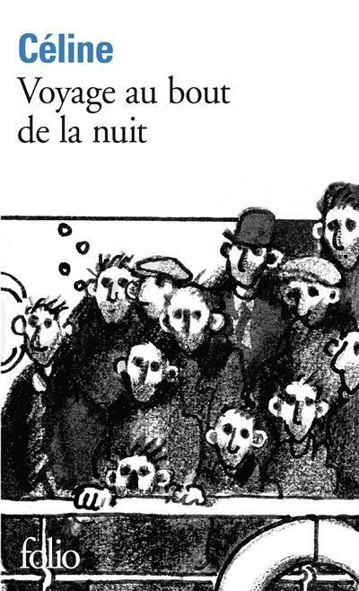 Louis-Ferdinand Céline
Published : January 1932 Voyage au bout de la nuit est un récit à la première personne dans lequel le personnage principal, Bardamu, raconte son expérience de la Première Guerre mondiale, du colonialisme en Afrique, des États-Unis de l'entre-deux guerres, et de la condition sociale en général. Notes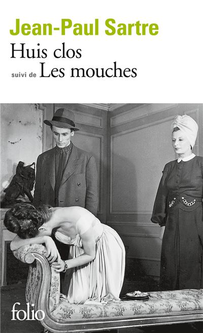 Jean-Paul Sartre
Published : January 1946 - Notes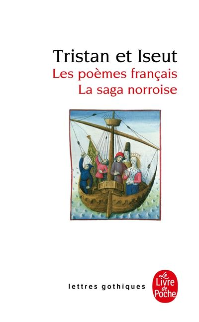 Philippe Walter, Daniel Lacroix
Published : January 1972 Peu de légendes ont marqué l’imaginaire amoureux de notre civilisation aussi fortement que celle de Tristan et Iseut. Ce volume réunit les romans et les récits en vers français qui en constituent, au XIIe siècle, les monuments les plus anciens : les romans de Béroul et de Thomas, la Folie Tristan, le lai du Chèvrefeuille et celui du Donnei des Amants (ou « Tristan rossignol »). On y a joint, traduite pour la première fois en français, la saga norroise du XII. Notes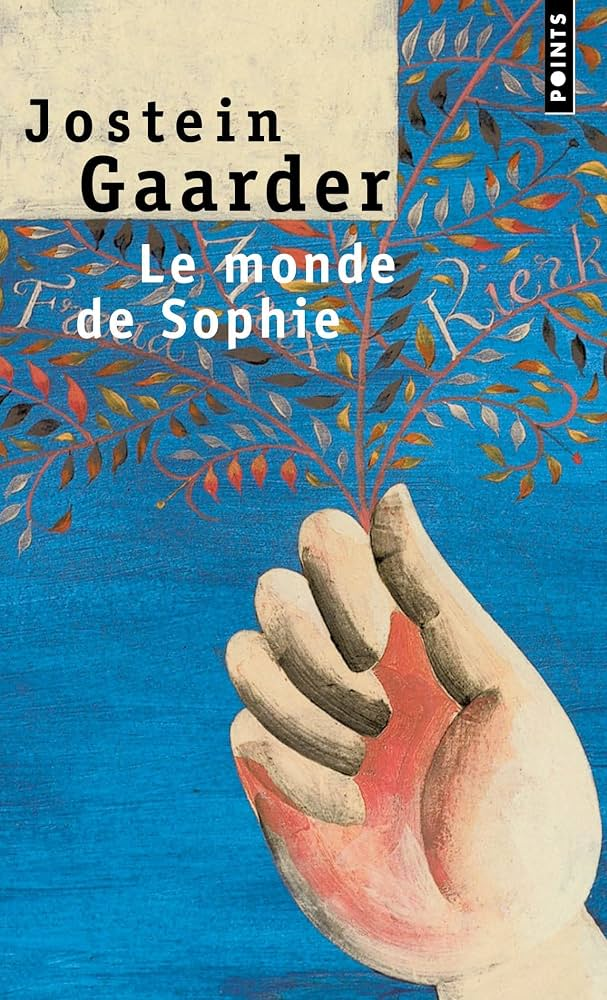 Jostein Gaarder
Published : January 1991 A la veille de ses quinze ans, Sophie Amundsen, jeune fille « presque modèle », reçoit une lettre d’un mystérieux individu. A l’intérieur, une seule phrase : «Qui es-tu ?» C’est le début d’une étrange correspondance qui l’amène peu à peu à partir sur les traces des plus grandes figures de la philosophie. Un roman initiatique paré de magie devenu grand classique de la littérature contemporaine. Notes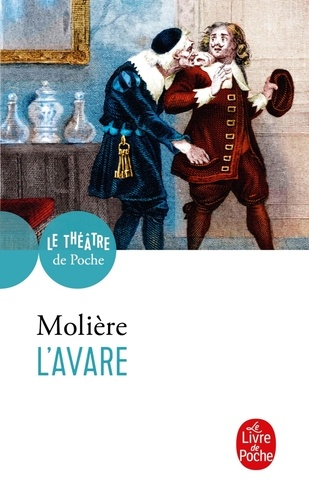 Molière
Published : January 1668 Harpagon est un vieillard odieux et avare. Avare jusqu'au ridicule, puisqu'il fait comparaître en justice le chat d'un de ses voisins pour lui avoir mangé le reste d'un gigot ! Avare jusqu'au sordide aussi. Ne cherche-t-il pas à prêter à un taux usuraire l'argent qu'il refuse à son fils ? N'est-il pas prêt à vendre sa fille à qui offre de la prendre sans dot ? Quant à sa prétendue attirance pour Mariane, elle ne résiste pas à sa fascination pour l'or. Notes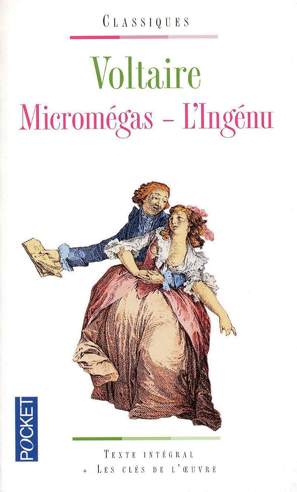 Voltaire
Published : January 1980 De fait, le conte voltairien gravite toujours, le plus élégamment du monde, autour d'un problè science, destinée, sagesse, optimisme, civilisation. Au centre, violemment mis en lumière, et tout prêt à faire ses expériences, le héros, esprit à la fois neuf et avisé, dont l'originalité est de toujours venir d'ailleurs. NotesAmélie Nothomb
Published : August 1999 Au début des années 90, la narratrice est embauchée par Yumimoto, une puissante firme japonaise. Elle va découvrir à ses dépens l'implacable rigueur de l'autorité d'entreprise, en même temps que les codes de conduite, incompréhensibles au profane, qui gouvernent la vie sociale au pays du Soleil levant. NotesVictor Hugo
Published : February 1829 Ce roman se présente comme le journal d'un condamné à mort écrit durant les vingt-quatre dernières heures de son existence dans lequel il raconte ce qu'il a vécu depuis le verdict de son procès jusqu'au moment de son exécution, soit environ cinq semaines de sa vie. Ce récit, long monologue intérieur, est entrecoupé de réflexions angoissées et de souvenirs de son autre vie, la « vie d'avant ». Le lecteur ne connaît ni le nom de cet homme, ni ce qu'il a fait pour être condamné, mis à part la phrase : « moi, misérable qui ai commis un véritable crime, qui ai versé du sang ! ». NotesCharles Baudelaire
Published : August 1857 Charles Baudelaire's 1857 masterwork was scandalous in its day for its portrayals of sex, same-sex love, death, the corrupting and oppressive power of the modern city and lost innocence, Les Fleurs du Mal (The Flowers of Evil) remains powerful and relevant for our time. NotesEugène Ionesco
Published : January 1950 Tout le monde la connaît. Peu peuvent l'expliquer. C'est ce que fait à merveille Emmanuel Jacquart, éditeur du Théâtre de Ionesco dans la Bibliothèque de la Pléiade. Il commence par retracer l'historique, la genèse de la pièce, à partir de L'anglais sans peine de la méthode Assimil. Les répliques se sont naturellement assemblées, et l'ensemble a produit ce que l'auteur appelle une «anti-pièce», une vraie parodie de pièce, sans ambition idéologique particulière. NotesÉmile Zola
Published : January 1884 Olivier Bécaille est mort un matin, après trois jours de maladie. Le médecin est formel, et l’enterrement doit avoir lieu quelques jours plus tard. Mais, en réalité, Bécaille est bien vivant. Terrassé par une crise de catalepsie, prisonnier de son propre corps mais conscient de tout ce qui l’entoure, il assiste, impuissant, au chagrin de sa femme, aux préparatifs de sa mise en bière et à l’intervention d’un voisin un peu trop charmant… NotesAnne Frank
Published : May 2019 In einem Amsterdamer Hinterhaus versteckt sich die jüdische Familie Frank im Sommer 1942 vor den Nationalsozialisten. Hier schreibt Anne Frank ihr weltberühmtes Tagebuch, dem sie – wie einer besten Freundin – all ihre Beobachtungen, Gedanken und Gefühle... NotesPierre Bordage
Published : August 2010 N’est-il pas trop tard ? Pour faire un enfant, pour revoir les siens après trente ans de vie extraterrestre, pour dire non à la guerre et à l’endoctrinement… NotesPlato
Published : January 381 Ils sont allongés sur des lits et parlent de l'Amour et de la Beauté. Leurs discours se succèdent, parfois se répondent : car il y a plusieurs Amours et plusieurs manières de désirer le Beau. À ces hommes vivant en un temps et un lieu où l'éducation des garçons est indissociable de la sexualité qui règle les rapports du maître et du disciple, une étrangère, Diotime, oppose un modèle féminin de la procréation du savoir. À travers elle, Socrate dessine les étapes de l'apprentissage du philosophe capable de se détacher du monde sensible pour devenir l'« amant » par excellence qui guide l'« aimé » dans sa quête du Vrai et du Beau. Par-delà les interprétations prudentes du Banquet que nous a léguées la tradition philosophique, cette traduction inédite invite à une lecture renouvelée du dialogue : un Banquet parfois extravagant, à l'image de son objet, d'une richesse stylistique exubérante, souvent cru dans son langage, foisonnant enfin dans sa recherche du bonheur véritable. NotesFabrice Melquiot
Published : September 2007 Fabrice Melquiot régénère la fantaisie du conte. Les flamants roses, qui servent de maillets pour la partie de croquet avec la Reine de Coeur, menacent d'en appeler à la SPA. Le Lapin Blanc à la légendaire redingote est d'une élégance dernier cri, portant un « veston quadrillé Nini Cerutto façon mots croisés pas finis »... Notes |
||||
Preteen/kid |
||||
|
Here are all my childhood books that I still have. Erin Hunter
Published : January 2003 Book 1 of La guerre des clans (Warriors)For generations, four Clans of wild cats have shared the forest according to the laws laid down by their warrior ancestors. But the ThunderClan cats are in grave danger, and the sinister ShadowClan grows stronger every day. Noble warriors are dying—and some deaths are more mysterious than others. In the midst of this turmoil appears an ordinary house cat named Rusty . . . who may turn out to be the bravest warrior of them all. NotesErin Hunter
Published : May 2003 Book 2 of La guerre des clans (Warriors)WindClan is missing, and hostilities between the remaining three clans place all the cats in peril. Illness and tragic accidents weaken the camp, and ThunderClan needs all its warriors to defend itself - but Fireheart suspects that certain cats may not be as loyal as they appear. NotesShannon Messenger
Published : October 2012 Book 1 of Keeper of the Lost CitiesTwelve-year-old Sophie Foster has a secret. She’s a Telepath—someone who hears the thoughts of everyone around her. It’s a talent she’s never known how to explain. NotesLoved reading all of these in my local library :) Elodie Tirel
Published : December 2009 Book 1 of L'elfe de luneLuna est une jeune elfe argentée qui a grandi au sein d'une meute de loups. Lorsque des guerrières drows déciment sa famille adoptive, elle se réfugie chez son mentor, le Marécageux, qui lui révèle les circonstances de sa naissance. Dans le but de retrouver sa mère, Luna entame un long périple qui la mènera à Rhasgarrok, la cité souterraine des elfes noirs. NotesBrandon Mull
Published : January 2013 Book 1 of the Animal Totem (Spirit Animals) seriesFour children separated by vast distances all undergo the same ritual, watched by cloaked strangers. Four flashes of light erupt, and from them emerge the unmistakable shapes of incredible beasts - a wolf, a leopard, a panda, a falcon. Suddenly the paths of these children - and the world - have been changed forever. Enter the world of Erdas, where every child who comes of age must discover if they have a spirit animal, a rare bond between human and beast that bestows great powers to both. A dark force has risen from distant and long-forgotten lands, and has begun an onslaught that will ravage the world. Now the fate of Erdas has fallen on the shoulders of four young strangers... and on you. NotesMaggie Stiefvater
Published : January 2014 Book 2 of the Animal Totem (Spirit Animals) seriesIn the world of Erdas, only a rare few are able to summon a spirit animal in the way Conor, Abeke, Meilin, and Rollan have. The bond they share with their animals is a partnership that allows them to access more-than-human abilities. NotesGarth Nix & Sean Williams
Published : February 2014 Book 3 of the Animal Totem (Spirit Animals) seriesErdas is a land of balance. A rare link, the spirit animal bond, bridges the human and animal worlds. Conor, Abeke, Meilin, and Rollan each have this gift-and the grave responsibility that comes with it. NotesBrandon Mull
Published : June 2014 Book 4 of the Animal Totem (Spirit Animals) seriesStrange things are happening at the frozen edge of the world. Conor, Abeke, Meilin, and Rollan have crisscrossed Erdas in their quest to stop the ruthless Conquerors. Only the four of them, supported by the gifts of their legendary spirit animals, have the power to defeat an evil takeover. NotesTui T. Sutherland
Published : September 2014 Book 5 of the Animal Totem (Spirit Animals) seriesThe sun is shining in the Hundred Isles, and yet the path forward seems crowded with shadows. Conor, Abeke, Meilin, and Rollan have traveled across the world, seeking a set of powerful talismans in order to keep them from enemy hands. Throughout their journey the young heroes have been hounded by pursuers, who always seem to know just where to find them. Now they know why. NotesEliot Schrefer
Published : December 2014 Book 6 of the Animal Totem (Spirit Animals) seriesDeep in the desert there sits a beautiful oasis, ruled by a monarch unlike any other in Erdas. His name is Cabaro, the Great Lion, and he reigns over a kingdom of animals, jealously guarding his golden talisman. No human has ever set foot in the Great Beast’s territory. The journey to his oasis is impossible. NotesMarie Lu
Published : March 2015 Book 7 of the Animal Totem (Spirit Animals) seriesConor, Abeke, Meilin, and Rollan were once ordinary kids. Then they discovered that they had spirit animals-wise and powerful partners who granted them with amazing gifts... and a legendary responsibility. NotesEliot Schrefer
Published : August 2015 Book 1 of the Animal Totem: Les bêtes suprêmes
|
||||
Comics (BDs) |
||||
|
Joris Chamblain (Writer), Aurélie Neyret (Illustrator)
Published : September 2012 Book 1 of Les Carnets de CeriseCerise est une petite fille âgée de 11 ans, qui vit seule avec sa mère. Elle rêve de devenir romancière, et a même déjà commencé à écrire ses carnets ! Son sujet favori : les gens, et plus particulièrement, les adultes. Ils sont si compliqués qu’elle souhaiterait mieux les comprendre. Elle adore les observer pour tenter de deviner quels secrets ils dissimulent au fond d’eux. Prenez Michel... Tous les dimanches, ce vieil homme s’engouffre dans la forêt avec de gros pots de peinture à la main. Qu’y fait-il donc toute la journée ? Repeint-il une vieille maison ? Décore-t-il des arbres ? Et pourquoi a-t-il l’air si triste quand il rentre le soir ? NotesJoris Chamblain (Writer), Aurélie Neyret (Illustrator)
Published : November 2013 Book 2 of Les Carnets de CeriseCerise est une petite fille âgée de onze ans, qui vit seule avec sa mère. Elle rêve de devenir romancière, et a même déjà commencé à écrire ses carnets ! Son sujet favori : les gens, et plus particulièrement, les adultes. Ils sont si compliqués qu'elle souhaiterait mieux les comprendre. Elle adore les observer pour tenter de deviner quels secrets ils dissimulent... Prenez Elisabeth... toutes les semaines, depuis vingt ans, cette vieille dame emprunte le même livre à la bibliothèque. Pourquoi ? Que contient-il de si important pour elle ? Quel secret cache-t-il qu'elle n'aurait toujours pas découvert ? Une nouvelle énigme pour Cerise, prête à tout pour la résoudre, quitte à détruire ce qu'elle a de plus cher. NotesJoris Chamblain (Writer), Aurélie Neyret (Illustrator)
Published : Novembre 2014 Book 3 of Les Carnets de CeriseCerise est une petite fille âgée de onze ans, qui vit seule avec sa mère. Elle rêve de devenir romancière, et a même déjà commencé à écrire ses carnets ! Son sujet favori : les gens, et plus particulièrement, les adultes.Elle adore les observer pour tenter de deviner quels secrets ils dissimulent au fond d'eux... Cette fois, elle s'intéresse à Sandra... Son atelier de reliure regorge d'ouvrages anciens. Mais il en est un qu'elle n'a jamais réparé. Pourquoi ? Savait-elle seulement qu'il était là ? Et quels sont ces cinq trésors liés à la vie de la jeune femme ? Cerise, Line et Erica vont suivre ensemble ce jeu de piste, cette enquête à tiroirs, pour tenter de rendre à Sandra ce qu'elle a perdu, il y a tant d'années... NotesJoris Chamblain (Writer), Aurélie Neyret (Illustrator)
Published : January 2016 Book 4 of Les Carnets de CeriseCerise est une jeune fille qui vit seule avec sa mère. Elle rêve de devenir romancière et a même déjà commencé à écrire ses carnets ! Son sujet favori : les gens, et plus particulièrement les adultes. Elle adore les observer pour tenter de deviner quels secrets ils dissimulent au fond d'eux... L'heure des vacances a sonné ! La visite d'un étrange manoir annonce une nouvelle enquête : chaque pièce est une énigme, chaque objet est un indice. Mais il est des secrets plus anciens qui ne demandent qu'à être dévoilés. Qui est cette déesse sans visage qui trône dans une pièce secrète ? Où se cache la partie manquante de ce tableau ? Mais surtout, qui tire vraiment les ficelles de ce nouveau mystère ? Si Cerise ne résolvait pas l'énigme à temps, les conséquences pourraient être terribles... NotesJoris Chamblain (Writer), Aurélie Neyret (Illustrator)
Published : November 2017 Book 5 of Les Carnets de CeriseCerise, onze ans, vit seule avec sa mère et rêve de devenir romancière. Elle a déjà commencé à écrire ses carnets ! Son sujet favori : les gens, et surtout les adultes. Elle les observe pour tenter de deviner leurs secrets les plus enfouis... NotesJoris Chamblain (Writer), Aurélie Neyret (Illustrator)
Published : January 2018 Book 5.5 of Les Carnets de CeriseValentin – tout comme Cerise, sa maman et le papa de Valentin – s'apprête à partir pour un long voyage autour du monde. Mais il n'a que sept ans et ce voyage lui fait un peu peur. Pour tenter d'apaiser cette angoisse, Cerise et lui ont imaginé une histoire d'extraterrestres : dans la nuit du 18 août, Toloh-Tim a atterri dans le jardin. Il veut fuir une mission spéciale qu'il devait accomplir. Mais laquelle ? C'est ce que les agents spéciaux Cerise et Valentin devront découvrir. NotesPatrick Sobral, Nadou (Illustrator)
Published : May 2012 Book 1 of Les Légendaires - OriginesDevenu Faucon d'argent comme son père tombé au combat, Danaël parcourt Alysia en quête de justice et de vérité. Impulsif, arrogant et belliqueux, le jeune homme ne trouve pas sa place dans ce corps d'armée dirigé par son frère. Pire, il a le sentiment de ne rien avoir accompli. Mais il y a d'autres façons de servir la justice que dans une armure, il l'apprendra très prochainement... NotesPatrick Sobral, Nadou (Illustrator)
Published : July 2014 Book 3 of Les Légendaires - OriginesAlors qu’il n’est encore qu’un enfant, Gryfenfer rencontre Samaël. Les deux garçons se lient rapidement d’amitié. Ce grand frère de substitution marque de son influence le développement du Légendaire en devenir. Mais Samaël, dont le nom n’est autre que la première appellation de l’ange déchu Lucifer, est plus sombre qu’on ne le croit… NotesPatrick Sobral, Nadou (Illustrator)
Published : November 2015 Book 4 of Les Légendaires - OriginesShimy est le personnage le plus énigmatique de toute l'équipe des Légendaires. C'est également le personnage dont le passé a été le moins évoqué jusqu'ici par l'auteur. On découvrira dans ce tome le monde elfique et sa culture, ses lois, ses règles, sa faune et ses ethnies, sous le trait époustouflant de Nadou. NotesJean-David Morvan, José Luis Munuera (Illustrator)
Published : September 2006 Book 49 of Spirou et FantasioNous retrouvons Spirou, Fantasio et Spip à Edo, capitale du Pays du Soleil Levant, de 1603 à 1864. Paradoxe temporel ? Voyage dans le temps ? Rien de tout ça : nos trois amis sont tout simplement invités à la prestigieuse inauguration de "Edo-resort", un gigantesque parc d’attractions qui reconstitue très fidèlement la vie du Japon médiéval. Mais Spirou et ses compagnons ne sont pas là pour le plaisir. Ils sont venus en Extrême-Orient à la demande de leur ami magicien, Itoh Kata, qui leur a confié une mission spéciale : récupérer deux enfants aux pouvoirs paranormaux étonnants qui sont détenus par Mangakana, un redoutable gangster aux ambitions immobilières troubles. Une course-poursuite va mener nos trois héros d’Akihabara, le quartier électronique, à Giza, celui des spectacles, en passant par Shinjuku, le territoire des redoutables yakuza, pour une visite guidée particulièrement mouvementée. Notes |
||||
Guide books |
||||
|
Erika Laïs
Published : April 2016 Au Moyen Âge, les plantes médicinales, ou "simples", permettaient de soigner toutes sortes de maux. Aujourd'hui, elles n'ont rien perdu de leurs vertus et servent à la confection de nombreux remèdes entièrement naturels. NotesPiggyback
Published : February 2018 A 512-page hardcover guidebook covering everything in the main game as well as the two Expansion Pass DLC packs “The Master Trials” and “The Champions’ Ballad”. NotesConcernedApe, Kari Fry (Illustrator)
Published : January 2016 This handy farmer's almanac covers farming, crafting, foraging, combat, fishing and mining; it also includes detailed information of the residents of Stardew Valley, so you can truly make the most of your wonderful new life on the farm. NotesKirsten Kearney
Published : September 2016 Bien plus qu’un simple jeu vidéo, minecraft® est devenu une inépuisable source d’inspiration pour de nombreux artistes. Des pyramides du plateau de gizeh à la basilique saint-pierre de rome, du mythique kraken au dragon du nouvel an chinois, en passant par d’incroyables créations totalement originales. Retrouvez dans cet ouvrage les plus belles structures conçues par ces passionnés du monde entier. Guidé par les différents tutoriaux de ce livre, vous pourrez à votre tour vous lancer dans l’assemblage de constructions démesurées. NotesMojang
Published : October 2017 Mobestiary reveals the secrets of every mob in the game. You’ll find little-known facts about passive, neutral, hostile, utility, and boss mobs, as well as more general information about their locations, behaviors, threat levels, and drops. NotesVarious
Published : September 2020 Redécouvrez à 360° la vie au temps de l'Egypte ancienne, grâce au Discovery Book, magnifique ouvrage fait à partir du Discovery Tour, le mode de jeu culturel et pédagogique d'Assassin's Creed. Plongez au cœur des pyramides, percez les secrets de leur fabrication, observez les cérémonies de momification des grands prêtres égyptiens, parcourez les terres fertiles autour du Nil, les tombes de la Vallée des morts... Retrouvez 1001 informations passionnantes et insolites sur les grands pharaons de l'Egypte et sur l'Egypte au temps de Cléopâtre. NotesBlain Brown
Published : September 2020 This book covers both the artistry and craftsmanship of cinematography and visual storytelling. Few art forms are as tied to their tools and technology as is cinematography. Take your mastery of these new tools, techniques, and roles to the next level with this cutting-edge roadmap from author and filmmaker Blain Brown. Notes |
||||
Other |
||||
|
Not sure where else to put these. Benjamin Alire Sáenz
Published : February 2012 Book 1 of the Aristotle and Dante seriesDante can swim. Ari can't. Dante is articulate and self-assured. Ari has a hard time with words and suffers from self-doubt. Dante gets lost in poetry and art. Ari gets lost in thoughts of his older brother who is in prison. Dante is fair skinned. Ari's features are much darker. It seems that a boy like Dante, with his open and unique perspective on life, would be the last person to break down the walls that Ari has built around himself. NotesScott Westerfeld
Published : February 2005 Book 1 of the Uglies seriesTally is about to turn sixteen, and she can’t wait. In just a few weeks she’ll have the operation that will turn her from a repellent ugly into a stunningly attractive pretty. And as a pretty, she’ll be catapulted into a high-tech paradise where her only job is to have fun. NotesVeronica Roth
Published : May 2011 Book 1 of the Divergent seriesIn Beatrice Prior’s dystopian Chicago world, society is divided into five factions, each dedicated to the cultivation of a particular virtue: Candor (the honest), Abnegation (the selfless), Dauntless (the brave), Amity (the peaceful), and Erudite (the intelligent). On an appointed day of every year, all sixteen-year-olds must select the faction to which they will devote the rest of their lives. For Beatrice, the decision is between staying with her family and being who she really is, she can’t have both. So she makes a choice that surprises everyone, including herself. Notes |
||||